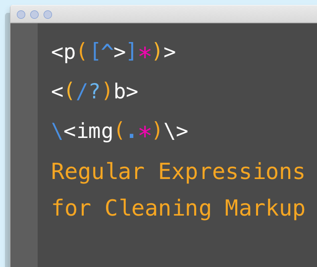
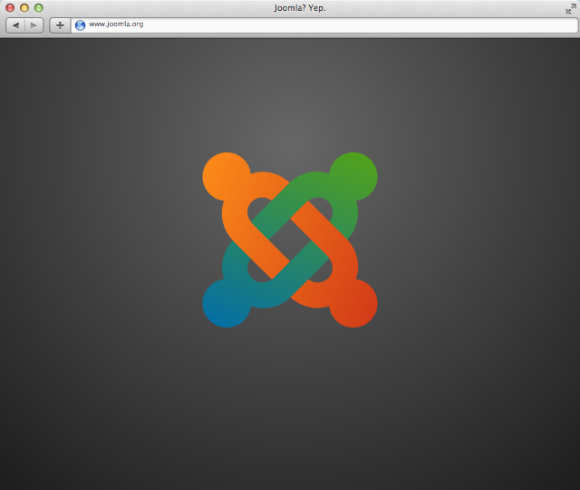

JASONDOYLE
Articles
Projects
Getting Grunt Up and Running in Your Local Dev (OS X)

Regular Expressions for Cleaning Markup
Type Baseline Sass Utility
What I like about my prompt setup (iTerm2/Z-Shell)

Fixing Joomla Permission Issues
Joomla Module Beatdown
Understanding the Display of Joomla Modules
Sassy Annotations
HTML Canvas getImageData()
Fixing Joomla Asset Table Issues